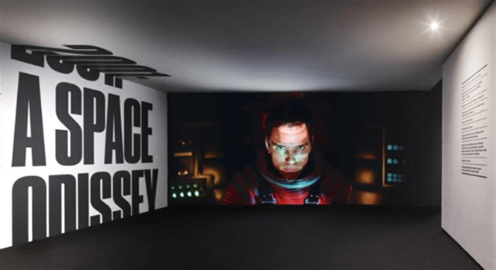
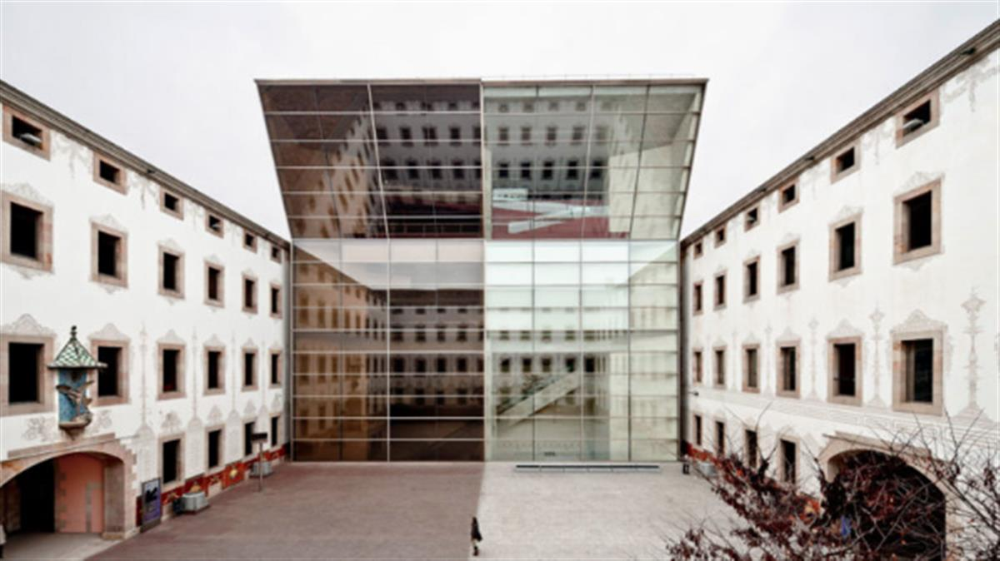
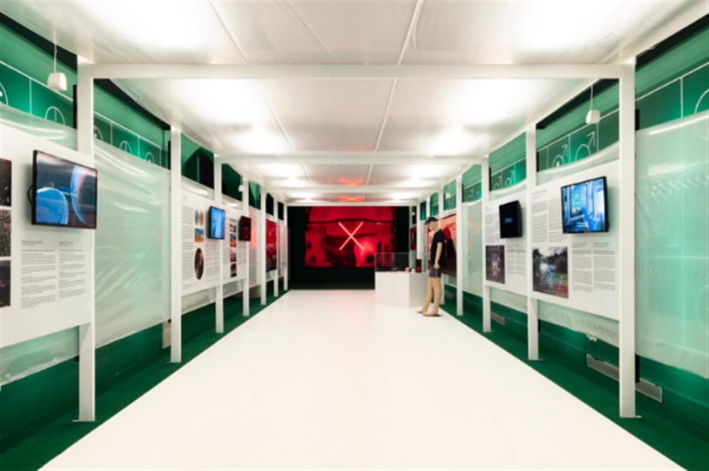
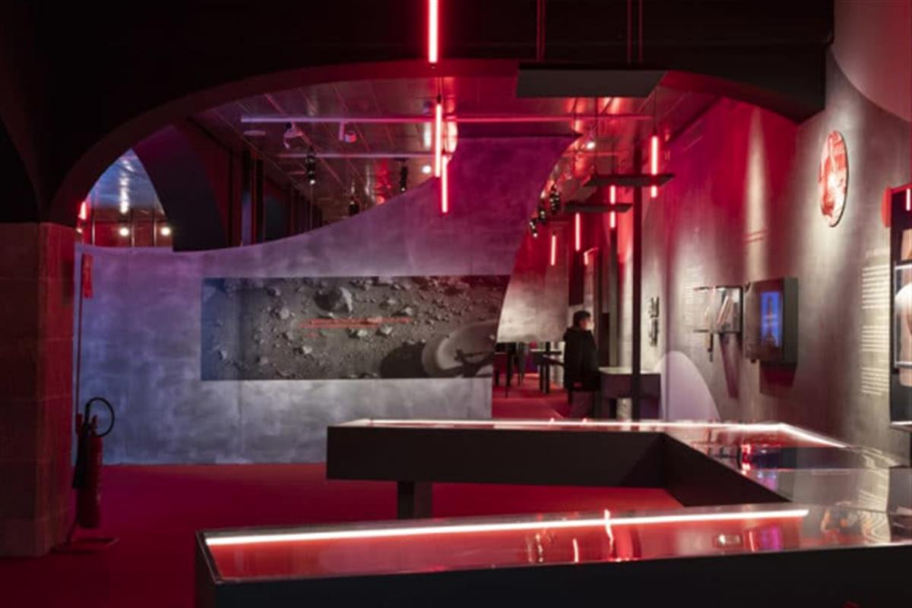
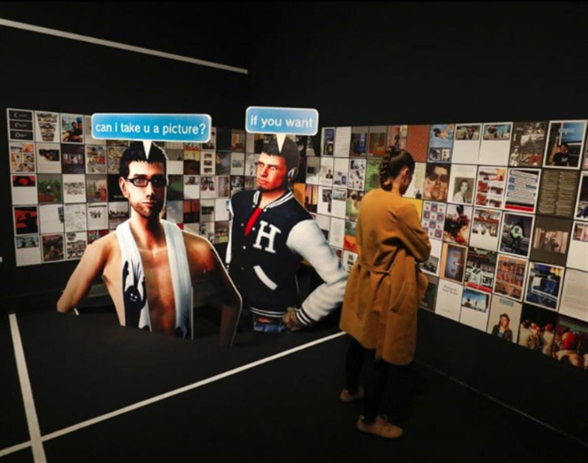
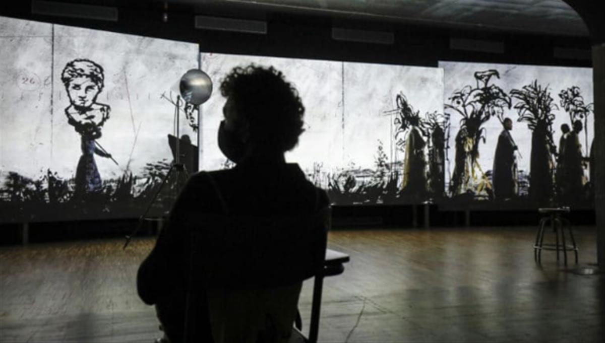
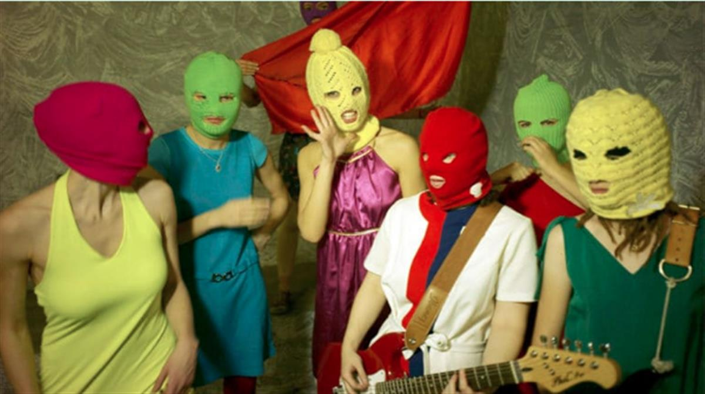
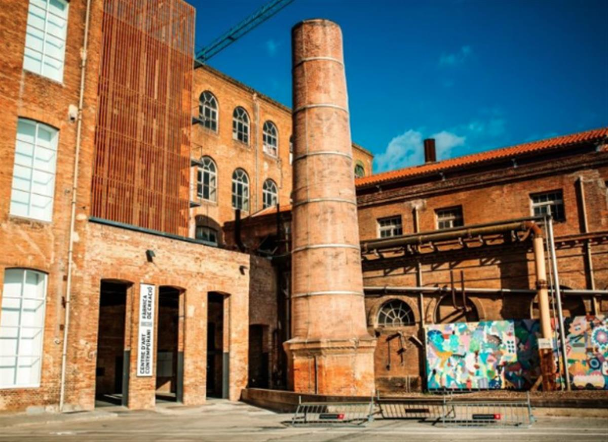
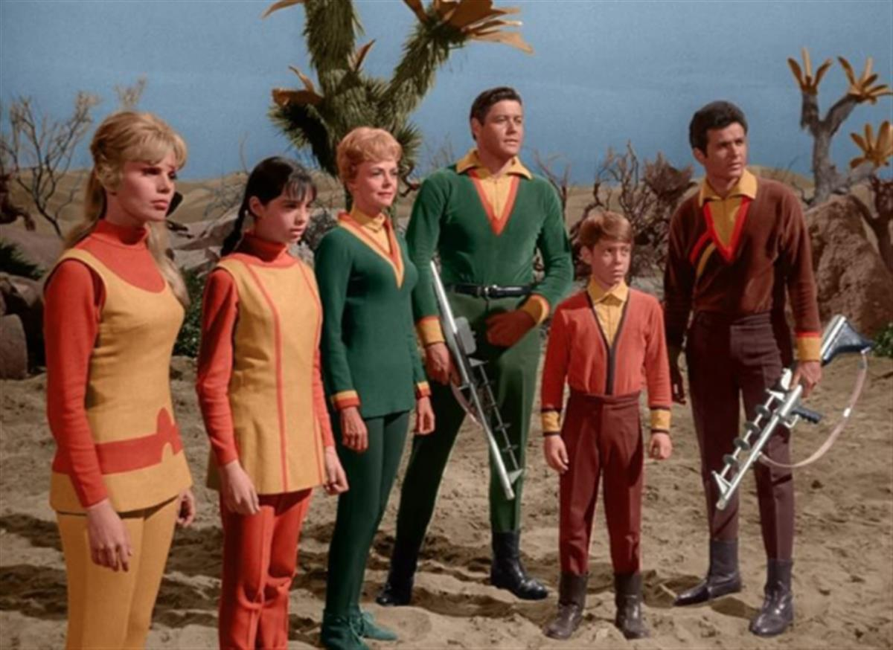

Journey with Jordi from Barcelona to the Red Planet
23.03.2021 — by Oscar Marin
⚡ The power of cultural arts: meet FutureHero Jordi Costa
“Museums that involve citizens are the future.”
Jordi Costa is the writer, filmmaker and cultural critic behind the exhibitions at Barcelona’s CCCB, one of Europe’s most diverse, important and creative cultural arts centres.
The cinema-loving curator was appointed Head of the Exhibition Department of the Centre de Cultura Contemporània de Barcelona in September 2019; that is, just a few months before the lockdown forced the institution to temporarily close its doors. Jordi had already worked there for years, programming and creating exhibitions such as Trash culture, Ballard: An Autopsy of the New Millenium and its celebrated exhibition on the work of Stanley Kubrick.

Stanley Kubrick at the CCCBThe CCCB’s latest exhibition, Mars. The Red Mirror,is a timely exploration of the Red Planet that looks at our relationship with Mars, from antiquity to the present day. Back down on planet Earth, we spoke to Jordi about the exhibition, the challenges that museums face right now and finding your curational voice.
Meet the FutureHero:Jordi Costa is committed to museums that are more porous, transversal, inclusive, sustainable and at the service of citizens
Voyage from Barcelona to Mars with Jordi
I enjoy being able to develop projects that have an experimental stamp…without losing the coherence that roots them in the CCCB’s trajectory.
Museums that involve citizens are the future. If museums and cultural centres don’t have citizen participation, they will have no future. We can aspire to work towards a better future only if we become assembly spaces in which innovative ideas can circulate.

CCCB in Barcelona’s RavalThe origins of an exhibition can be multiple. As a general rule, the first thing to do is to detect a topic that challenges our audience and look for an appropriate curator to develop it. From there begins a long process in which decisions are made about the exhibition language, locating pieces and refining the set.
Another key moment is the entry of the team of architects and designers. They work on both the space and the graphic identity.

Mars: The Red Mirror is on until 11 July 2021Our exhibition on Mars has been especially timely.In the context of the climate crisis, Mars has taken root as our planet B, although those who support the idea don’t always gauge the improbability of that happening.
The essential thing is to find your own voice, like the Mars curator Juan Insua, who has focused the project in terms of cultural history around the imagination, hopes, fears and knowledge that we have projected towards the Red Planet.

Inside Mars: The Red MirrorMuseums and cultural centres such as the CCCB are the focal points of cultural offerings at the service of a public who have had many other windows of culture and leisure closed off to them by recent restrictions.
Crises like the one we are going through are signs that warnings that were already in the air should be taken seriously. What worried the CCCB before the pandemic is the same thing that worries us after the pandemic: to be more porous, transversal, inclusive and sustainable.
There is a lot to do: from reinforcing the digital part of our programming without abandoning the presence, putting all possible energy into expanding audiences without weakening the quality and ambition of the proposals and, of course, never ceasing to be creative to develop and innovate in formats.

Gameplay (2020) journeyed to the origins of video gamesIn the midst of a pandemic, the Exhibition Department has faced several challenges. Among others, to readapt an essentially interactive exhibition such as Gameplay to the new protocols determined by COVID that, at that time, required us to eliminate all interactivity from the exhibition.
The achievement of not compromising the CCCB’s quality standards has been fundamentally down to the centre’s entire team. It was not been easy to launch two new exhibitions (William Kentridge and Mars. The Red Mirror) with the imposed limitations.

William Kentridge. That Which Is Not Drawn (2020)The exhibition calendar for 2021 is exciting: from Ciencia Fricción, an exhibition that starts from the ideas of Donna Haraway and Lynn Margulis, to The Mask Never Lies, a kind of alternative history of the 20th century from an object used as a political instrument for a doctrine of fear or underground activism. Without forgetting Urban Nature, a proposal by the German theatre group Rimini Protokoll that will question the limits between the exhibition and the dramaturgical representation.

The Mask Never Lies (from December 2021)When it comes to creating social good through culture,I believe in decentralisation. A good example is cultural centres like Fabra i Coats in the Sant Andreu neighborhood of Barcelona – and I admire the work of cooperatives such as those that have managed to carry out an exhibition hall like the Zumzeig cinema.

The Fabra i Coats old textile factory has become a space for artistic creation in BarcelonaIf I could have any FuturePower, it would be a truly inclusive sensitivity. I would love it if one day we all woke up endowed with a deep environmental awareness. The great universal superpower would go through the universal moderation of the collective ego.
I never hope to go to Mars. I like more the climatic and biological diversity of the planets that the crew of the Star Trek Enterprise or the protagonists of Lost in Space arrived at. I’m more Mediterranean than dry: I don’t think I would get used to a Martian life without going through the neuroses of the characters in Philip K. Dick’s Martian Time-slip!

Lost in Space (1965)AtlasAgenda: For close encounters with the Red Planet, read more about Mars. The Red Mirror.
SOURCE: ATLAS OF THE FUTURE